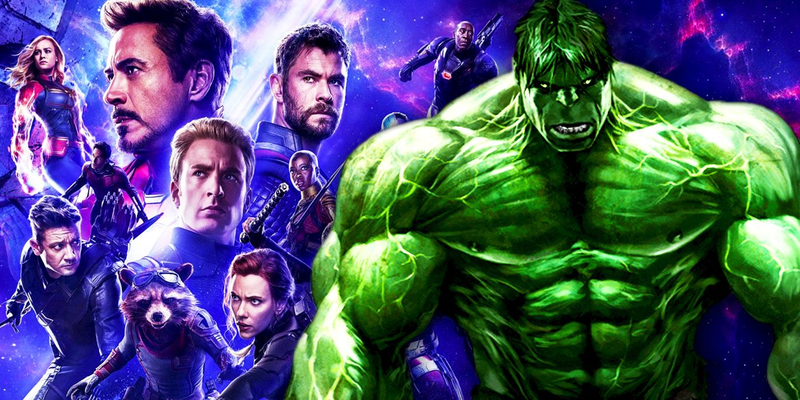

About The Hulk
The Hulk is the angry alter ego of scientist Bruce Banner, having been exposed to high levels of radiation Bruce has to try and manage his anger to keep the big guy from coming out.
The Hulk and his Friends
Characteristics
- He is super strong
- He likes to smash things
- Most people are scared of him
The Hulks Friends
The Hulk is part of 'The Avengers' so has lots or awsome friends